2018 HONDA CIVIC TYPE R
2025 - THEN AND NOW - 123/250
This casting replicates the FK8 generation of the Civic Type R, produced from 2018 to 2021.

HONDA S800 RACING
2025 - COMPACT KINGS - 212/250
The Honda S800 is a small two-door sports car manufactured by Honda from 1966 to 1970 and acted as Honda's flagship offering, replacing the S600. It was powered by a 0.8L inline-4 which revved to 9,500 rpm, mated to a 4-speed manual; it was often described as the fastest production 1-liter car in the world at the time due to its high-revving engine. It was available in coupe and roadster formats.
This casting is a replica of the 1968 Honda S800 prepared by the Honda Racing Service Center which won the GT-1 class at the 1968 12 Hours of Suzuka. It featured an enlarged 0.9L inline-4 making over 100 horsepower and was driven by Kuniomi Nagamatsu and Yoshifumi Kikura in that race.

HONDA CIVIC CUSTOM
2022 - HW J-IMPORTS - 204/250
This casting depicts a heavily modified EG-generation Honda Civic intended for drag racing.
This casting was modified from the Honda Civic EG casting as designed by Ryu Asada. It features right-hand drive, riveted window panels, a widebody kit, intercooled turbocharger and mismatched wheels, with oversized front tires to provide maximum grip to the front-wheel-drive Civic.
The rear shelf of the car features two symbols which appear to resemble the letters "RA". A fire extinguisher can be seen on the floorpan, as well as random dots and lines in the base; these read "RYU" in morse code. The driver's side window is removed entirely. The turbocharger and intercooler can be seen in the gap in the front bumper. The initial livery features numerous references in tribute to Ryu Asada; other easter eggs were added in post by staff sculptor Manson Cheung "without anyone knowing".

HONDA CIVIC EG
2025 - FAST & FURIOUS: RACING COURSE - 1/5
The Honda Civic EG is a compact car produced by Honda as part of the fifth generation of Civic. Designed by Kohichi Hirata and replacing the fourth generation Civic, the fifth generation Civic was available in three body styles, each with a different internal code. Produced from 1991 to 1995, when it was replaced by the sixth generation Civic, the fifth generation has gained a cult following since, particularly the EG hatchback models.
This casting is based on a modified 1992 Honda Civic EG with a VeilSide-style bodykit, representing Hector's Civic Hatchback, as seen briefly in The Fast and the Furious.

1985 HONDA CRX
2025 - PEANUTS 75 YEARS - 2/5
The 1985 Honda CR-X depicts the JDM Model of the Honda CR-X, Mugen-converted into a mid-engined race car. The Honda CR-X was a Sports Compact-class FF Layout sports car produced by Honda In Japan from 1983-1991 with years ranging from 1984 to 1991. in 1985, the CR-X was available with a 1.5 liter engine, which was popular in the Japanese market. The CR-X was similar in design to the Fourth Generation Honda Civic in layout and styling, but was based off a 3rd-generation Civic, even though there are some styling similarities and mechanical overlaps.
The Hot Wheels version debuted in The Hot Ones series in 2012. It was originally a two-piece casting with the headlights part of the windows. In 2016, the casting was modified to remove these features for its introduction into the mainline.
The roof scoop sits directly above the metal piece holding the body onto the base, cutting through the top of the engine in the back of the interior piece, making it look like it's part of the air intake from the roof.

2018 HONDA CIVIC TYPE R
2026 - NIGHTSPEED - 11/250
This casting replicates the FK8 generation of the Civic Type R, produced from 2018 to 2021.

HONDA CIVIC CUSTOM
2022 - HW J-IMPORTS - 204/250
This casting depicts a heavily modified EG-generation Honda Civic intended for drag racing.
This casting was modified from the Honda Civic EG casting as designed by Ryu Asada. It features right-hand drive, riveted window panels, a widebody kit, intercooled turbocharger and mismatched wheels, with oversized front tires to provide maximum grip to the front-wheel-drive Civic.
The rear shelf of the car features two symbols which appear to resemble the letters "RA". A fire extinguisher can be seen on the floorpan, as well as random dots and lines in the base; these read "RYU" in morse code. The driver's side window is removed entirely. The turbocharger and intercooler can be seen in the gap in the front bumper. The initial livery features numerous references in tribute to Ryu Asada; other easter eggs were added in post by staff sculptor Manson Cheung "without anyone knowing".

HONDA S2000
2025 - FAST & FURIOUS: GRAPHIC REMIX - 1/5
Ryu Asada's favorite JDM of all time, the Honda S2000 first appeared as a 2011 New Model. The S2000 sports a customized look with a hardtop roof, roof air scoop, front splitter, rear wing and custom hood; this bodykit is of Ryu's own design.
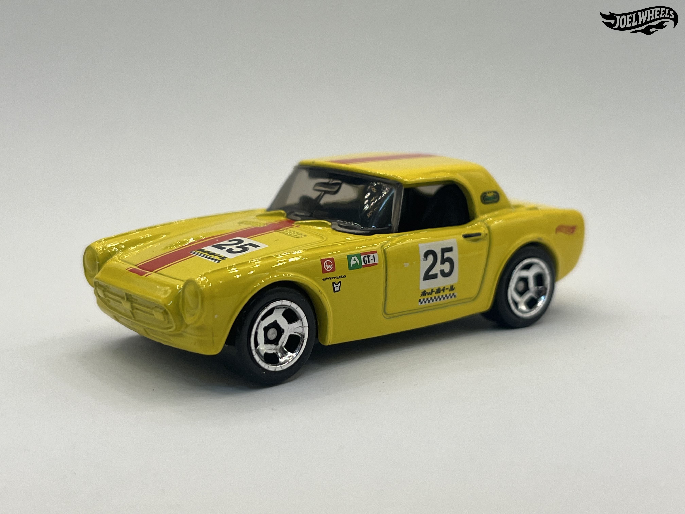
HONDA S800 RACING
2024 - HW RACE DAY - 209/250
The Honda S800 is a small two-door sports car manufactured by Honda from 1966 to 1970 and acted as Honda's flagship offering, replacing the S600. It was powered by a 0.8L inline-4 which revved to 9,500 rpm, mated to a 4-speed manual; it was often described as the fastest production 1-liter car in the world at the time due to its high-revving engine. It was available in coupe and roadster formats.
This casting is a replica of the 1968 Honda S800 prepared by the Honda Racing Service Center which won the GT-1 class at the 1968 12 Hours of Suzuka. It featured an enlarged 0.9L inline-4 making over 100 horsepower and was driven by Kuniomi Nagamatsu and Yoshifumi Kikura in that race.
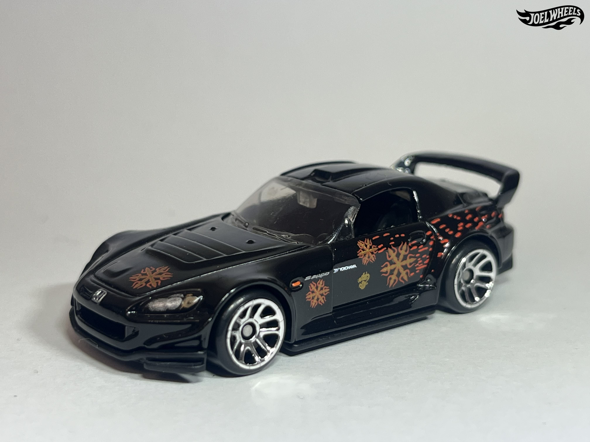
HONDA S2000
2025 - FAST & FURIOUS VILLAINS - 1/5
Ryu Asada's favorite JDM of all time, the Honda S2000 first appeared as a 2011 New Model. The S2000 sports a customized look with a hardtop roof, roof air scoop, front splitter, rear wing and custom hood; this bodykit is of Ryu's own design.
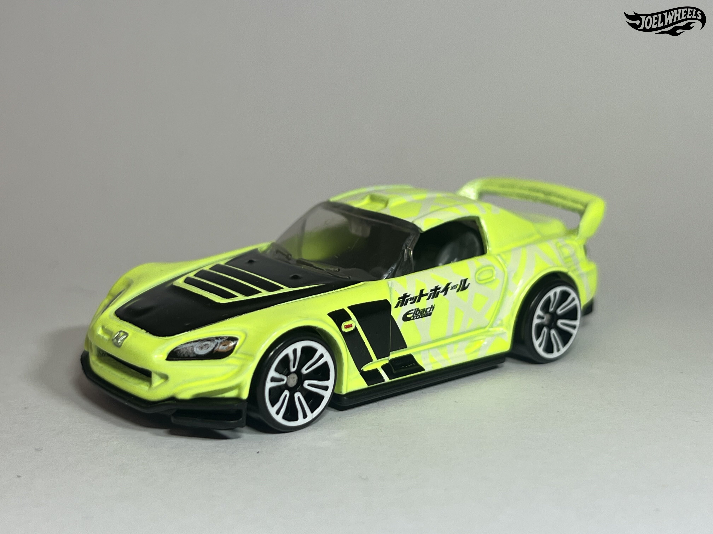
HONDA S2000
2024 - NEON SPEEDERS - 6/8
Ryu Asada's favorite JDM of all time, the Honda S2000 first appeared as a 2011 New Model. The S2000 sports a customized look with a hardtop roof, roof air scoop, front splitter, rear wing and custom hood; this bodykit is of Ryu's own design.
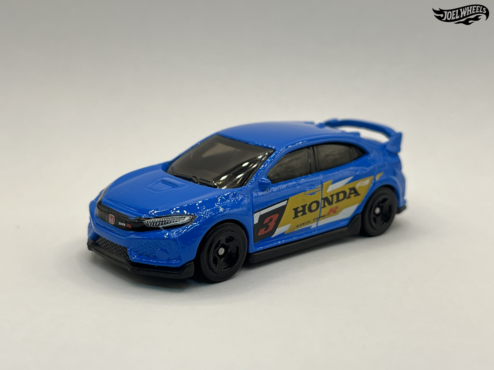
2018 HONDA CIVIC TYPE R
2025 - THEN AND NOW - 123/250
This casting replicates the FK8 generation of the Civic Type R, produced from 2018 to 2021.
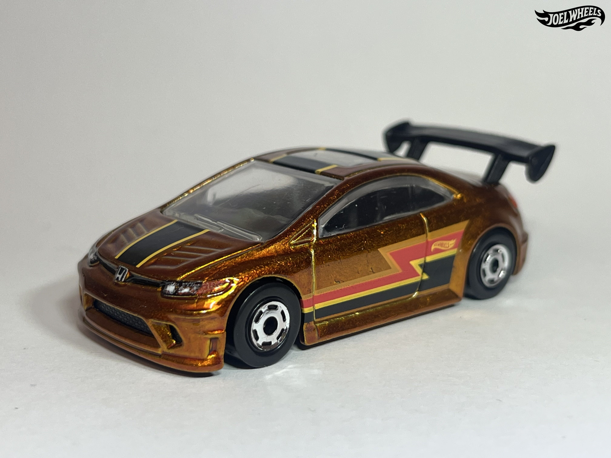
HONDA CIVIC SI
2025 - THE HOT ONES - 5/8
The Honda Civic Si is a sport compact version of the Honda Civic, originally introduced in 1984 as a trim level for the third-generation Honda Civic. This generation, introduced in 2006, was the car's sixth generation and based on the Civic's eighth generation. Styled by Manabu Konaka, the Civic Si used a 2.0L K20Z3 inline-4 mated to a 6-speed manual. It was produced from 2006 to 2011.
This specific casting replicates a 2006 Honda Civic Si shown off at the 2006 SEMA Show with a custom body kit and lowered ride height. The base of the casting reads 2006 Honda Civic Si on most versions; the base simply reads Honda Civic Si on the first release.
Two types of interior variations can be found on this casting; rounded racing seats or "pointy" racing seats.
It debuted alongside its real-life counterpart, which is the eighth generation of the Civic, it was produced from 2005 to 2012.
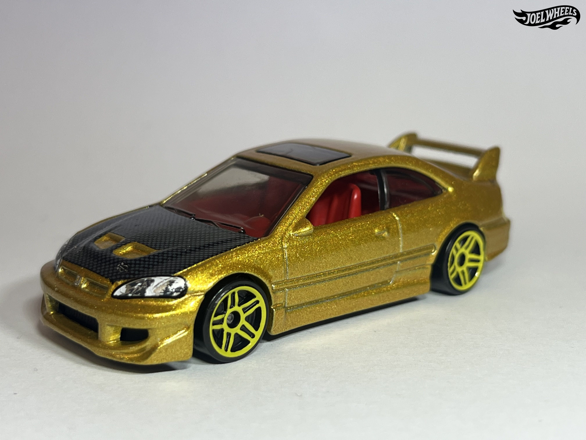
HONDA CIVIC SI
2024 - HW J-IMPORTS - 45/250
The Honda Civic Si was a performance-oriented version of the sixth-generation Honda Civic produced from 1999 to 2000. Only available in a coupe body style, the car was powered by a 1.6L B16A2 inline-4. The Si moniker was mostly used in America as Japan used the SiR and Type R monikers and Europe the VTi. Despite its short production cycle the car gained a dedicated following. The whole sixth-generation Honda Civic was produced from 1995 to 2000.
The Hot Wheels casting replicates a specific 2000 Honda Civic Si entered by Super Street Magazine into the Honda Civic Si Challenge; the goal of the challenge was for four automotive magazines (Car and Driver, Sport Compact Car, Super Street and Popular Mechanics) to turn a pre-production 2000 Honda Civic Si into a modified ride with a $10,000 budget within five months, the deadline being 30 September 1999; the cars would be judged on appearance, performance and emissions. The build was overseen by Dave Martis. Modifications to the car included a Wings West Avenger bodykit, Progress Group coilovers, JUN Auto Mechanic-tuned naturally-aspirated B16A2 engine, short-ratio transmission, titanium exhaust and ECU programming, with the engine tuned by Susumu Koyama, Honda Optional Equipment wing, Versus Motorsports carbon fiber hood, Endless brake pads, Cusco LSD, Car Craft custom interior, Modern Image wrap and 225/40R16 Yokohama A038s. The car was nicknamed Ichiban (lit. "No. 1") or "Itchy" for short and won the competition. The car is currently located in Honda America's private collection and is not street legal, having been showcased at a number of SEMA events since.
The casting was introduced into the Hot Wheels mainline by Alec Tam in 2001, with Martis assisting with the design of the car and Eric Tscherne doing graphics. The casting was retooled for 2021, the entire tooling was updated sharing no pieces with the original model. This new casting includes side mirrors and a glass moonroof not found on the original casting. The casting also saw the removal of the front passenger windows, and sported a slightly modified bodykit with a new hood style, taller rear wing, modified interior and lowered ride height. This version of the casting is noticeably shorter and wider than the older version.
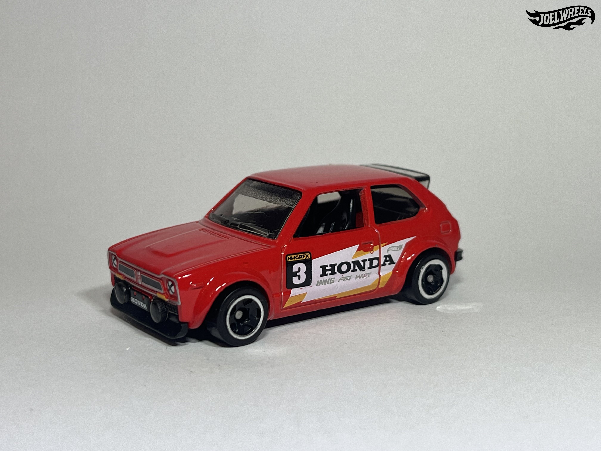
´73 HONDA CIVIC CUSTOM
2025 - THEN AND NOW - 231/250
The Honda Civic is a series of automobiles produced by Honda since 1972. The first generation of the Civic, introduced in 1972, laid down the foundation by which Honda has followed since when producing automobiles and Honda's first genuine market success. Production ended in 1979.
This casting depicts a 1973 Honda Civic with lowered stance and modifications. This casting was designed as a tribute to Ryu Asada; graphics for the initial release were done by Andrés Andrieu, his first basic tampo design.
If looked at closely, the trunk of the casting features a remote-controlled Honda Civic hatchback.
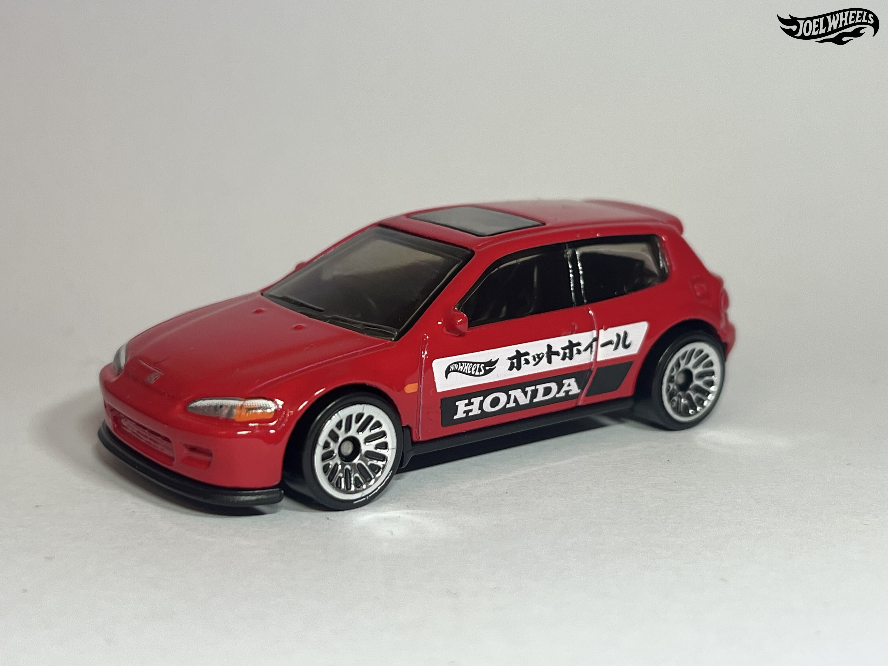
´92 HONDA CIVIC EG
2024 - HW J-IMPORTS - 95/250
The Honda Civic EG is a compact car produced by Honda as part of the fifth generation of Civic. Designed by Kohichi Hirata and replacing the fourth generation Civic, the fifth generation Civic was available in three body styles, each with a different internal code. Produced from 1991 to 1995, when it was replaced by the sixth generation Civic, the fifth generation has gained a cult following since, particularly the EG hatchback models. This casting is modeled after an EG6 Civic Si as evidenced by its sunroof.
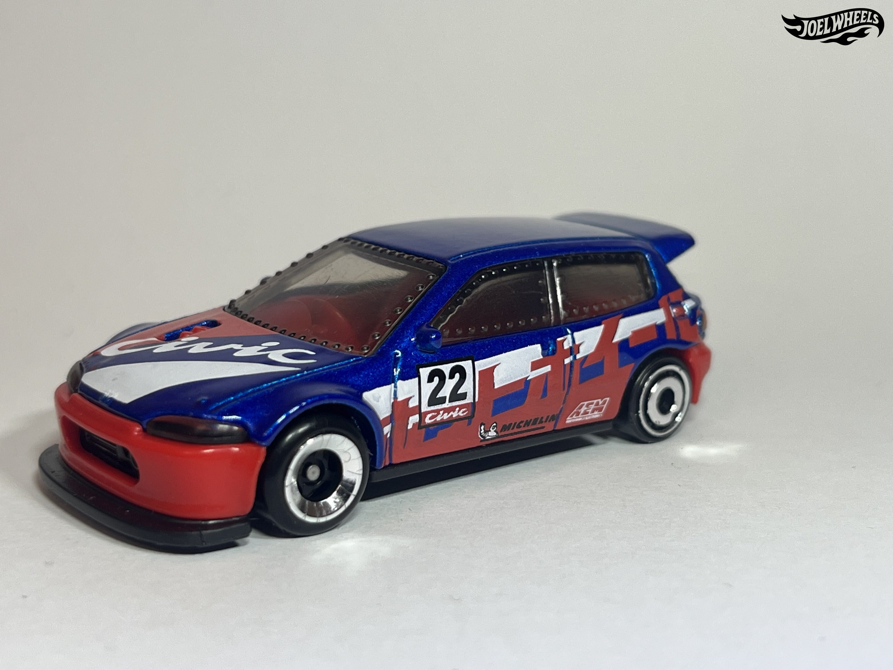
HONDA CIVIC CUSTOM
2025 - HW REVERSE RAKE - 201/250
This casting depicts a heavily modified EG-generation Honda Civic intended for drag racing.
This casting was modified from the Honda Civic EG casting as designed by Ryu Asada. It features right-hand drive, riveted window panels, a widebody kit, intercooled turbocharger and mismatched wheels, with oversized front tires to provide maximum grip to the front-wheel-drive Civic.
The rear shelf of the car features two symbols which appear to resemble the letters "RA". A fire extinguisher can be seen on the floorpan, as well as random dots and lines in the base; these read "RYU" in morse code. The driver's side window is removed entirely. The turbocharger and intercooler can be seen in the gap in the front bumper. The initial livery features numerous references in tribute to Ryu Asada; other easter eggs were added in post by staff sculptor Manson Cheung "without anyone knowing".
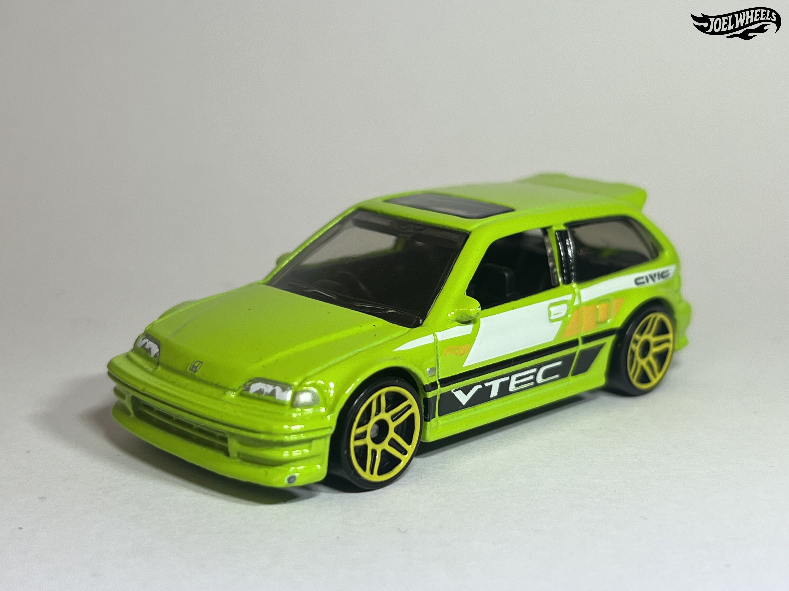
´90 HONDA CIVIC EF
2025 - HW: ´70S VS. ´90S - 28/250
The Honda Civic EF is a compact hatchback variant of the EF-chassis Honda Civic, which was part of the Civic's fourth generation of production.
By time 1987 rolled around, Honda was ready to launch the fourth generation of its widely popular Civic saloon and hatchback. The Hot Wheels casting depicts the SiR (2-door hatchback) version of the Japanese Domestic Market (JDM) model from 1990. The fourth generation of the Honda Civic saw the introduction of the DOHC VTEC (Dual Overhead Cam Valve Lift Timing Electronic Control) engine, which was only available in Japan until 1992 when Honda replaced the Fourth generation Civic. This model depicts an EF9 Civic.
The 2019 release of this casting is based on an actual car built and owned by Kenji Sumino of Trust Company Ltd. Kenji's car features a B18C1 Motor and GS-R transmission swap as well as an updated hood, bumper and headlights.
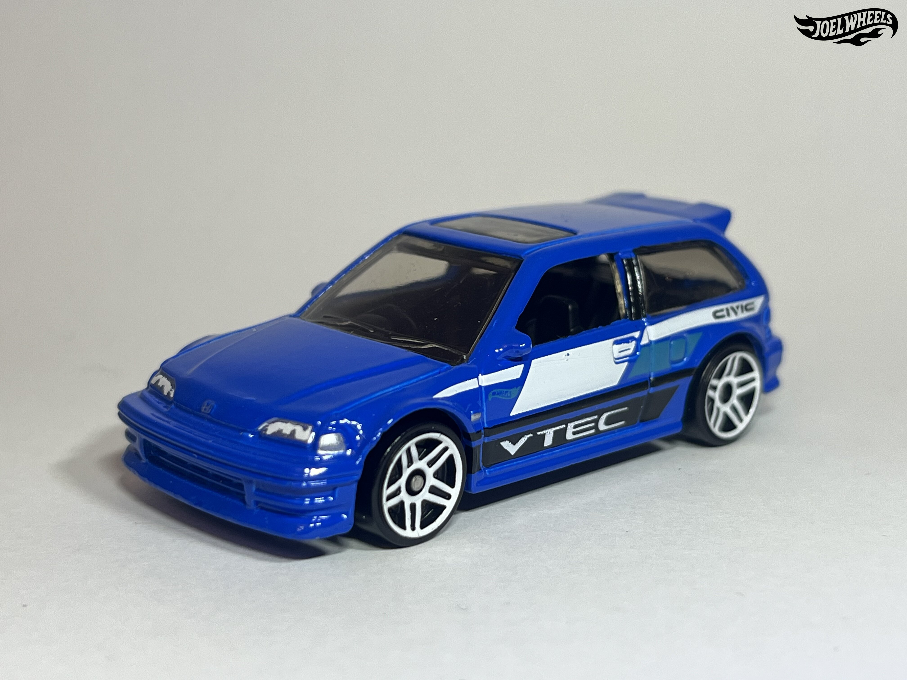
´90 HONDA CIVIC EF
2025 - HW: ´70S VS. ´90S - 28/250
The Honda Civic EF is a compact hatchback variant of the EF-chassis Honda Civic, which was part of the Civic's fourth generation of production.
By time 1987 rolled around, Honda was ready to launch the fourth generation of its widely popular Civic saloon and hatchback. The Hot Wheels casting depicts the SiR (2-door hatchback) version of the Japanese Domestic Market (JDM) model from 1990. The fourth generation of the Honda Civic saw the introduction of the DOHC VTEC (Dual Overhead Cam Valve Lift Timing Electronic Control) engine, which was only available in Japan until 1992 when Honda replaced the Fourth generation Civic. This model depicts an EF9 Civic.
The 2019 release of this casting is based on an actual car built and owned by Kenji Sumino of Trust Company Ltd. Kenji's car features a B18C1 Motor and GS-R transmission swap as well as an updated hood, bumper and headlights.
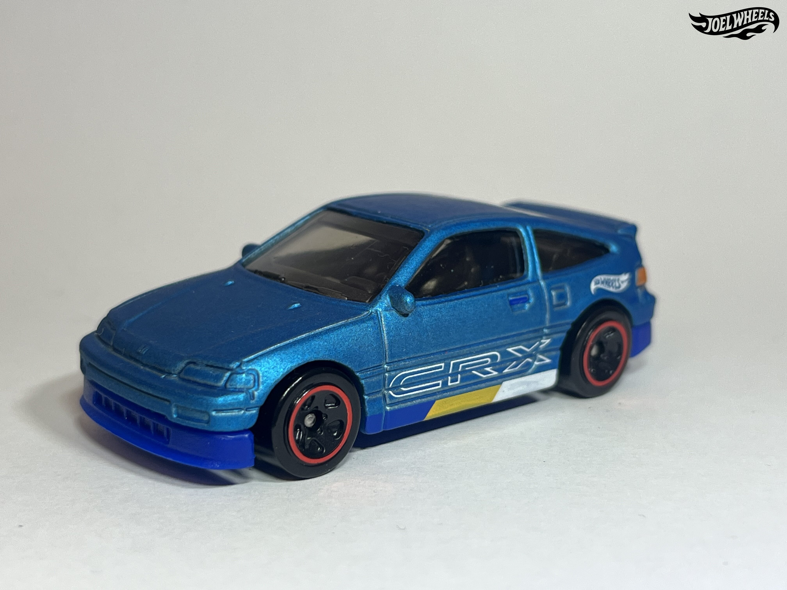
´88 HONDA CR-X
2023 - HW J-IMPORTS - 148/250
The '88 Honda CR-X was designed by Ryu Asada. It debuted in the 2019 Nightburnerz mainline segment. It is based on the second generation CR-X manufactured between 1988 and 1991. One of Ryu's personal favorite cars, he had wanted to make it for several years; Ryu wanted to include the additional rear window but used a tampo to represent it due to technical difficulties in doing so.
This is the second Honda CR-X made by Hot Wheels, the other being a modified 1985 Model CR-X.